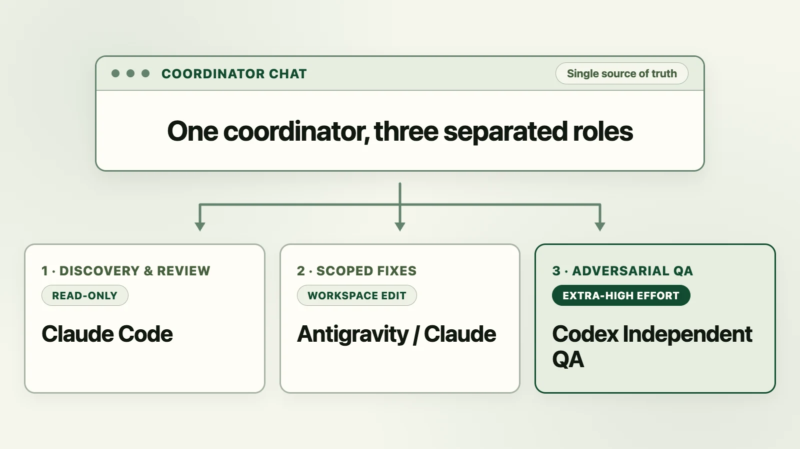
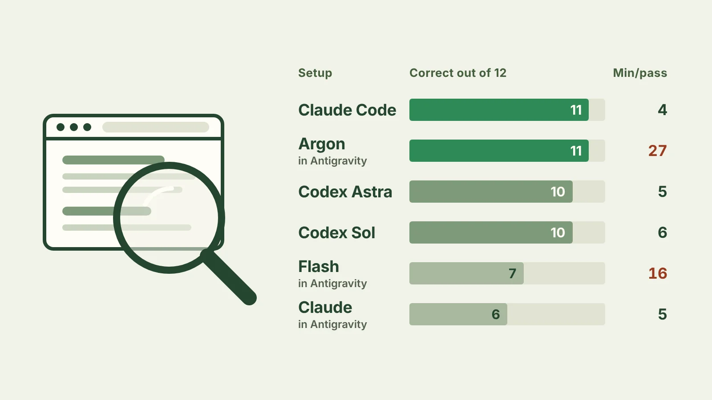
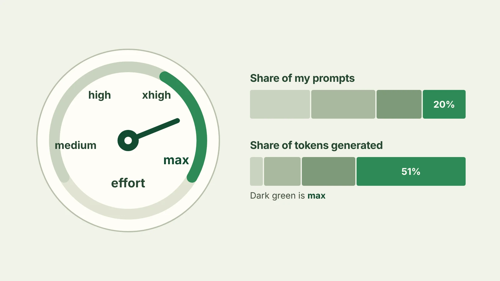
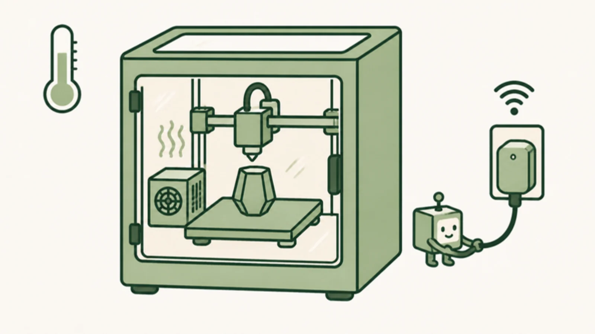
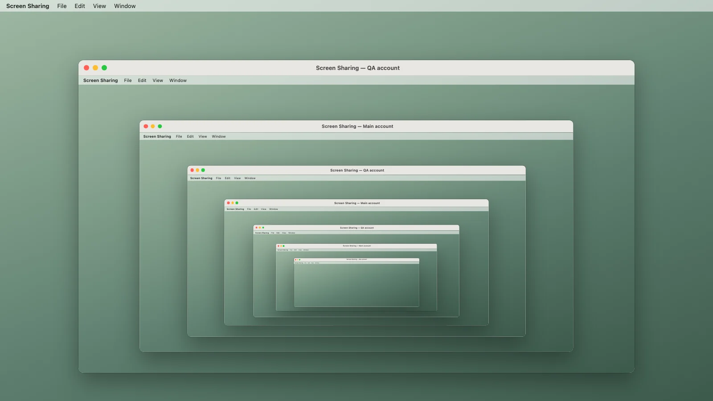
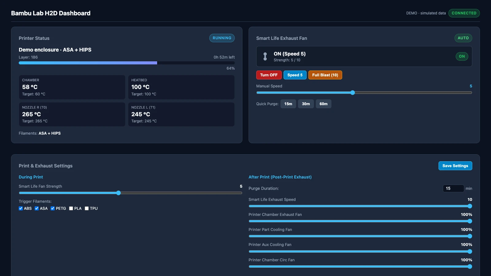
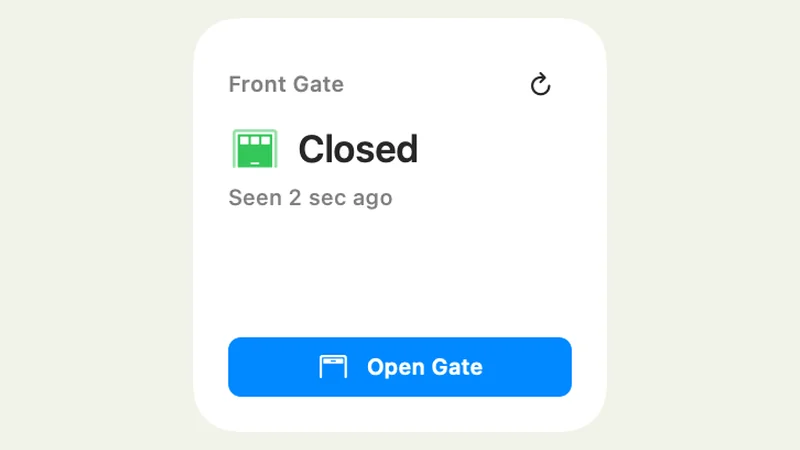

How my local AI secretary chat works
How a 15-minute Python sweep and a local SQLite ledger let Claude Code, Codex, and Antigravity triage 16 message, calendar, and bank streams on my Mac.
 Read the post →
Read the post →
Notes on building software
How a 15-minute Python sweep and a local SQLite ledger let Claude Code, Codex, and Antigravity triage 16 message, calendar, and bank streams on my Mac.
Read the post →
Codex Desktop's next-prompt predictor clones active threads with zero tools to guess human input. Turning that mechanism into an autonomous development loop that simulates my design critiques, UI friction instincts, and QA verification cuts human round-trips before I ever look.
 Read the post →
Read the post →
How I use a single coordinator chat and a local launcher script to route discovery, implementation, and independent QA across Claude Code, Codex, and Google Antigravity.

Read the post →I gave Claude Code, Codex and Google's Antigravity the same six web research questions, twice, and checked every link they cited. The tool mattered more than the model.

Read the post →Max was a fifth of my Claude Code prompts and half of everything Claude generated. I went through 1,037 of my own prompts to see what it bought.

Read the post →How a dyld executable-path shim and a C++ bridge let a Python CLI sign H2D print commands using Studio’s own closed-source networking dylib.
 Read the post →
Read the post →
My K1 Max has a chamber sensor but no chamber heater. A smart plug, a Fingerbot and a few Klipper macros now let each ASA print heat and hold its own chamber.

Read the post →How I use a second macOS account to give an AI agent its own desktop for app testing while I keep working.

Read the post →I built an experimental trading system that uses one model to propose trades, two others to review them, and Python to enforce the rules between those steps.
 Read the post →
Read the post →
Connecting a Bambu Lab H2D status feed to a Smart Life exhaust fan, with warm-up handling, a post-print purge and a small Python dashboard.

Read the post →Build notes on turning a broken 30-year-old gate into a smart gate I can open from Mac and iPhone widgets, with a camera that checks whether it’s open.

Read the post →